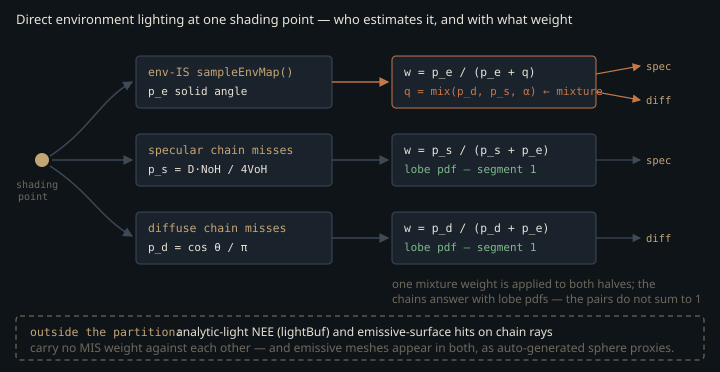

Monograph · Tree · ← Module hub · MIS heuristics
sampling
MIS heuristics
Balance and power in mis.glsl.
Two ways to find a light
From a shading point a path tracer can reach a light two ways: sample the light — a point on it, or a direction from the environment map's luminance CDF — and shadow-trace toward it, or sample the BSDF, let the bounce ray travel, and take what it meets. Both are unbiased estimators of the same integral, and each fails where the other works. Light sampling wastes nearly every sample on a smooth surface, where almost no light direction has meaningful BSDF response; BSDF sampling wastes nearly every sample under a small bright source, which almost no BSDF direction hits. Running both and adding counts the light twice.
Multiple importance sampling is the correction — scale each sample by how likely the *other* strategy was to have produced that same direction. OHAO has two tracers and they apply it differently: the reference path tracer, `rt/path_tracer.slang`, weighs every light and the environment with the power heuristic; the realtime GLSL tracer, `pt_raygen_realtime.rgen`, weighs the environment alone with the balance heuristic.
Two heuristics, one per tracer
Here $p_A$ and $p_B$ are the two strategies' probability densities *evaluated at the same direction* $\omega$, both in solid-angle measure, and $\beta$ the exponent: $\beta = 1$ is Veach and Guibas' balance heuristic, $\beta = 2$ their power heuristic. The guarantee is the second equation: because the weights sum to one at every direction, the combined estimator stays unbiased no matter how badly the two densities disagree.
The realtime tracer includes `mis.glsl` and uses its balance heuristic:
return pdfA / max(pdfA + pdfB, 1e-6);shaders/includes/rt/mis.glsl:8The `max(..., 1e-6)` guards in a useful direction. Both densities are non-negative, so the ratio is already bounded above by 1 and clamping the *denominator* from below can only push the weight down. Where both collapse the weight decays toward zero rather than producing a NaN: a divide-by-zero traded for bounded energy loss.
The reference writes its own power heuristic, and returns exactly 0 when both densities are 0:
return a2 + b2 > 0.0 ? a2 / (a2 + b2) : 0.0;shaders/rt/path_tracer.slang:144`mis.glsl` carries a power heuristic too, and it has no caller anywhere in `shaders/` or `ohao/`; the Slang tracer does not include GLSL headers.
float misPowerHeuristic(float pdfA, float pdfB) {shaders/includes/rt/mis.glsl:12Veach's result is that the balance heuristic's variance exceeds that of any other weighting by at most a small additive term, and that the power heuristic does better in the common case where one strategy's density dominates the other's — a sharp highlight under a large light, a small light over a rough surface. The reference is the image the deferred frame is judged by, and one path a sample is its whole cost model, so the extra multiplies are not the constraint there.
The reference closes the partition over every light
At every vertex the reference picks one light uniformly, so every light density it reports carries the choice, $1/n$:
const uint i = min(uint(rng.next() * float(n)), n - 1u);shaders/rt/path_tracer.slang:243A sphere (a point or spot light, at least 1 cm) is sampled uniformly over its cone of directions, a rectangle by its area, a sun along its direction. The bounce rays that the BSDF draws are traced against the scene *and* the lights' emitter meshes — the camera ray against everything the camera sees:
const PathPayload hit = trace(origin, dir, depth == 0u ? kRayMaskCamera : (kRayMaskScene | kTlasMaskEmitter), 1.0e4);shaders/rt/path_tracer.slang:483An emitter mesh carries its light's index in its instance row, and the closest hit returns it, so a bounce ray that lands on a light knows which light it found:
payload.light = uint(c.instanceRow9.w + 0.5);shaders/rt/path_tracer.slang:725`emitterRadiance` then gives that light's radiance toward the ray's origin and the density light sampling had for the same direction, and the bounce's contribution is weighed against it with the BSDF density the ray was drawn with:
add = throughput * le * powerHeuristic(lastPdf, lightPdf);shaders/rt/path_tracer.slang:506The light-sampling side mirrors it. A sun is a delta, so no bounce ray can find it and its sample is taken at full weight; a sphere or rectangle with an emitter mesh is weighed against the BSDF's density; a light *without* an emitter mesh is found only by light sampling, and takes full weight too:
const float w = ls.pdf > 0.0 ? (ls.mis ? powerHeuristic(ls.pdf, base.pdf(wo, wi, tables)) : 1.0) / ls.pdf : 1.0;shaders/rt/path_tracer.slang:599Which lights have a mesh is the scene's to say. `LightTable::setEmitterLights` receives the RT indices of the lights RenderScene made an emitter instance for, and the upload flags them in a spare word of each light — `extra.w` for a rectangle, `extra2.z` for a sphere:
if (rt[i].positionAndType.w > 2.5f) rt[i].extra.w = 1.0f; // a rectangleohao/render/scene/light_table.cpp:237l.emitter = l.type == 3u ? e.w > 0.5 : (l.type != 1u && f.z > 0.5);shaders/rt/path_tracer.slang:189The flag is load-bearing in both directions. A light weighed against BSDF sampling when no bounce ray can meet it loses the share the BSDF side would have carried; a light taken at full weight while its mesh is also found adds its light twice.
The environment is the same pair. A direction drawn from the map's CDF is weighed against the BSDF:
const float3 c = throughput * f * envRadiance(L) * powerHeuristic(pdfL, base.pdf(wo, wi, tables)) / pdfL;shaders/rt/path_tracer.slang:615and a bounce ray that leaves the scene against the CDF — except the camera ray, which no light strategy could have produced:
const float w = depth == 0u ? 1.0 : powerHeuristic(lastPdf, envPdf(dir));shaders/rt/path_tracer.slang:490What is left out is emissive surfaces. They are found by BSDF sampling alone, at full weight:
add = throughput * hit.emission; // emissive surfaces: found by BSDF sampling onlyshaders/rt/path_tracer.slang:512and the RT light buffer no longer holds the sphere proxies the raster frame makes for them, so nothing else finds them:
// meets the surfaces themselves, and a proxy light beside them would count their light twice.ohao/render/scene/light_table.cpp:177In the reference every light with a mesh and the environment sit in a two-strategy partition, and every other source is found by exactly one strategy. A source found by both strategies without a weight would be counted twice; one found by neither would be dark.
The BSDF density on the other side of every one of those weights is the mixture the sampler actually draws from: `OpenPBRBase::sample` picks the specular lobe with probability `specularShare` and the diffuse lobe otherwise, and `pdf` reports the same mixture for any direction, so the density a bounce ray was drawn with and the density a light sample is weighed against are one function.
return ps * ggxPdfBounded(wo, wi, alpha) + (1.0 - ps) * eonPdf(wo, wi, diffRough);shaders/material/openpbr.slang:533Both sides must be quoted in solid angle
A ratio of densities means nothing unless both are in the same measure. The env sampler draws from a 2D CDF built over equirectangular pixels — a density in UV space — and converts to solid angle by dividing out the Jacobian of the mapping:
$p_{uv}$ is the luminance-proportional density over the normalised $(u,v)$ square, $\theta$ the polar angle, and $2\pi \cdot \pi \cdot \sin\theta$ the area stretch at that latitude — which is why the poles, where $\sin\theta \to 0$, need the `1e-4` floor both tracers apply before dividing:
pdf = pdfUV / (OHAO_TWOPI * OHAO_PI * sinT);shaders/includes/rt/env_sampling.glsl:128return max(cond * marg * float(W) * float(H) / (kTwoPi * kPi * max(sin(theta), 1e-4)), 0.0);shaders/rt/path_tracer.slang:356The reference's light densities are converted the same way. A sphere's cone of directions has solid angle $2\pi(1-\cos\theta_{max})$, so a uniform direction in it has density $1/(2\pi(1-\cos\theta_{max}))$, computed as $\sin^2/(1+\sqrt{1-\sin^2})$ so that a distant small sphere does not cancel to 0:
return 1.0 / (kTwoPi * oneMinusCos);shaders/rt/path_tracer.slang:219A rectangle is sampled uniformly by area, $1/A$, and turned into solid angle by $d^2/\cos\theta_L$, the light-side cosine:
s.pdf = choose * d2 / (cosL * l.area);shaders/rt/path_tracer.slang:266Where the BSDF side's env density comes from differs between the tracers. In the realtime one the miss shader inverts the equirect mapping and reports the density through the payload:
payload.envPdf = pdfEnvMap(dir, pc.control.w, uint(pc.tuning.y));shaders/rt/pt_miss.rmiss:81That is an ordering constraint: `payload.envPdf` is produced by the miss shader and consumed by the raygen only after `traceRayEXT` returns. A miss shader that forgets to set it, or sets it in UV measure while `sampleEnvMap` returns solid angle, does not crash — it produces a smooth, plausible brightness error that survives any number of samples. The reference's miss shader only clears the payload's flag, and its raygen evaluates `envPdf(dir)` itself, the same function its light-sampling side uses.
The realtime tracer: the environment only
`pt_raygen_realtime.rgen` calls `misBalanceHeuristic` six times, and every call has an env-map density on one side — three for env-importance-sampled shadow rays, two for chain rays that escape to the sky, and one ReSTIR-GI candidate taken up at the end of this page. There is no MIS weight anywhere else in it.
Analytic lights are therefore outside the partition. The bounce-0 NEE block picks one light uniformly, samples its surface, shadow-traces, and scales the result by a geometric area-to-solid-angle factor and a `lightCount` compensation for the pick:
vec3 directContribution = Le * (diff + spec) * NdotL * weight * float(lightBuf.lightCount);shaders/rt/pt_raygen_realtime.rgen:631The only other thing applied to that sum — and to the split diffuse/specular halves derived from it — is the firefly clamp, live whenever the clamp flag and `pc.tuning.x` are both set:
if (lumD > pc.tuning.x) neeDiffuse *= pc.tuning.x / lumD;shaders/rt/pt_raygen_realtime.rgen:645A variance hack, not an MIS term. Its chain rays are traced with `kRayMaskScene`, which leaves the lights' emitter meshes out, so no chain ray can meet a light and there is no second estimator to weigh against — with one exception. A near-mirror primary hit traces its first specular ray with the camera's mask, to reflect the light's mesh, and drops the specular term of its light sample instead:
if (firstHitMirror) spec = vec3(0.0); // its specular ray reflects the light's meshshaders/rt/pt_raygen_realtime.rgen:626bounce == 1u && firstHitMirror ? kRayMaskCamera : kRayMaskScene, 0, 0, 0,shaders/rt/pt_raygen_realtime.rgen:841That is a hard switch at `ptMirrorRoughness`, not a weight: each light is counted once on either side of the threshold, by a different strategy. Emissive surfaces are found by chain rays only, as in the reference — with no proxies in the RT light buffer, nothing samples them.
The delta escape hatch
The balance heuristic assumes both strategies have finite densities. A mirror lobe does not: its density is a Dirac delta, against which any finite $p_e$ should win zero weight. The realtime specular chain detects that case by roughness, parks `specLastBsdfPdf` at 1.0, and flags the bounce:
if (roughness < 0.02) {shaders/rt/pt_raygen_realtime.rgen:789The flag is read where that chain escapes to the sky, to skip the weight entirely:
if (payload.envPdf > 0.0 && pc.control.w > 0u && !specLastBounceWasDelta) {shaders/rt/pt_raygen_realtime.rgen:853so a mirror reflection of a bright sky feature arrives at full strength. The counterfactual is not a halving: with the parked pdf of 1.0, dropping the skip would weight that ray by $1/(1 + p_e)$, and for a sharp sun texel $p_e$ is large — the reflection would be all but extinguished.
That `0.02` is a threshold, not a measurement, and it moves only one side of the pair: the bounce-0 env-IS weight never consults the flag. Widening the band forces the BSDF side to 1 over directions where the env-IS side still discounts itself by a factor below one, the two sum above one, and the band it swallows is double-counted, not lost. (A second `0.05` test sits inside an `#ifdef OHAO_CRUDE_GLOSSY` A/B branch that nothing in the repository defines.)
The reference has no delta lobe to escape from. Its GGX is never sharper than roughness 0.01 — alpha $10^{-4}$, a mirror at any renderer's resolution — so every density it produces is finite and the power heuristic weighs mirrors like any other surface:
static const float kMinSpecularRoughness = 0.01;shaders/material/openpbr.slang:27Where the realtime partition does not close

The realtime raygen is dual-ray: from every primary hit it deterministically traces both a specular and a diffuse chain. The diffuse one carries a true $f\cos\theta/p$ — cosine sampling collapses the ratio to the albedo:
diffThroughput = albedo;shaders/rt/pt_raygen_realtime.rgen:1110and the specular one samples GGX's visible normals, whose weight collapses to Fresnel times the Smith $G_2/G_1$:
specThroughput = F * smithG2overG1GGX(NdotV, NdotL, alpha);shaders/rt/pt_raygen_realtime.rgen:820On the first segment nothing is chosen stochastically, so each chain reports a single-lobe density with no selection factor:
specLastBsdfPdf = G1V * D / (4.0 * NdotV) + 1e-6;shaders/rt/pt_raygen_realtime.rgen:829// MIS PDF for env-miss weighting: pure cosine-hemisphere PDF (no lobe-mix factor).shaders/rt/pt_raygen_realtime.rgen:1111From bounce 1 on, each chain draws `bsdfChoice` and picks a lobe, and the density it reports carries the selection factor:
specLastBsdfPdf = specProb * pdf_spec;shaders/rt/pt_raygen_realtime.rgen:1077with a mirrored $(1-\text{specProb})\cos\theta/\pi$ on the diffuse branch, and the same pair again inside the diffuse chain. The partition below is a statement about the primary hit only.
The env-IS side does not follow suit even there. It builds a Fresnel-derived lobe-selection probability $\alpha$ and blends the two lobe densities into one mixture $q$:
float specProbMIS = max(fresnel.r, max(fresnel.g, fresnel.b)) * (1.0 - roughness * 0.9);shaders/rt/pt_raygen_realtime.rgen:705then applies the single weight $w = p_e / (p_e + q)$ to *both* the diffuse and specular halves of its own contribution. A mixture density is the right object when one lobe is picked at random — as the reference does at every vertex; under a deterministic dual-ray split the correct partitions are per-lobe — $\{p_e, p_d\}$ for the diffuse half, $\{p_e, p_s\}$ for the specular half. Substituting $q$ for each:
with equality only at $\alpha = 0$, and symmetrically the specular pair closes only at $\alpha = 1$. Because $q$ lies between $p_d$ and $p_s$, a surface with $p_s > p_d$ underweights env light into its diffuse channel and overweights it into its specular channel.
The endpoints are the common cases and they come out right. A metal has $\alpha$ forced to 1 by the `mix(specProbMIS, 1.0, metallic)` on the next line, and no diffuse lobe to lose. A dielectric gets $\alpha = \max(F)\,(1 - 0.9\,\text{roughness})$, whose second factor is 0.1 at roughness 1 while $\max(F)$ is the Schlick term at the incident cosine — starting at the $F_0 = 0.04$ the shader assigns dielectrics and climbing toward 1 at grazing. A fully rough dielectric therefore sees $\alpha$ between 0.004 and 0.1: small either way, so $q \approx p_d$ and the diffuse pair closes. The defect lives in between, on glossy dielectrics where both lobes carry energy and their densities differ by orders of magnitude. The claim here is the algebra; the visible magnitude has not been measured. It matters more than it looks, because those two halves are also the demodulated AOVs the realtime denoisers consume separately.
The mixture is near-universal in that shader but not universal. Its three env-IS blocks build it; the ReSTIR-GI initial candidate weights an env sample taken at the secondary vertex against a bare cosine density and no mixture at all:
float w = misBalanceHeuristic(envPdf, pdfDiffuseMIS);shaders/rt/pt_raygen_realtime.rgen:1528Contracts
- Both densities must be in solid-angle measure. A producer returning UV or area density rebalances the weights instead of failing.
- Argument order encodes which strategy is weighted: the first density's strategy gets the weight. Swapping the arguments inverts the partition, and the symptom is a brightness shift, not a crash.
- In the reference, a light's emitter flag (`LightTable::setEmitterLights`) must match whether a bounce ray can meet its mesh. A flagged light without a mesh loses energy; an unflagged light with one counts twice.
- In the reference, a bounce ray's density (`lastPdf`) and a light sample's BSDF density must both be `OpenPBRBase::pdf`, the mixture the sampler draws from.
- In the realtime tracer, `payload.envPdf` is written by the miss shader, so a BSDF-side env hit is weightable only after `traceRayEXT` returns. A new miss shader must set or zero it, or the raygen reads a stale value; a near-delta specular bounce must set `specLastBounceWasDelta`, or mirror reflections of bright sky lose energy.
Source files
shaders/includes/rt/mis.glslshaders/rt/path_tracer.slangohao/render/scene/light_table.cppshaders/material/openpbr.slangshaders/includes/rt/env_sampling.glslshaders/rt/pt_miss.rmissshaders/rt/pt_raygen_realtime.rgenParent hub for the full pipeline narrative; this page is the file-level design unit. Sitemap · hover glossary terms anywhere.